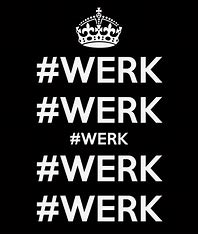

Welkom bij de website over werk
Op onze website vind je volgende: waar je informatie vindt over werk, arbeidsrechten en tips voor het vinden en behouden van een baan. We bieden ondersteuning voor werkzoekenden en inzicht in de huidige arbeidsmarkt. Bereid je voor op de toekomst van werk en leer hoe je je rechten kunt beschermen!

Werk zoeken
Er zijn verschillende manieren om werk te vinden. Gebruik vacaturesites zoals Indeed, LinkedIn en Glassdoor voor een grote aanbod van banen. Netwerken is ook belangrijk: bezoek evenementen en workshops in jouw vakgebied. Daarnaast kun je je inschrijven bij uitzendbureaus die je helpen bij het vinden van tijdelijke of vaste banen.
Rechten en plichten
In Nederland hebben werknemers recht op verschillende arbeidsrechten. Het minimumloon wordt regelmatig aangepast en geldt voor werknemers van 21 jaar en ouder. De Arbeidstijdenwet beperkt de werkweek tot maximaal 60 uur en garandeert minimaal 11 uur rust per dag. Werknemers hebben recht op vakantiedagen, betaald ziekteverlof, ouderschapsverlof en bijzonder verlof voor speciale gelegenheden.
Tips en ondersteuningen
Om een gezonde werk-privébalans te behouden, stel duidelijke grenzen door werkuren vast te leggen en tijd voor jezelf te plannen. Gebruik een agenda om werk- en privéactiviteiten te organiseren en neem regelmatig pauzes om stress te verminderen. Bij stress, identificeer de oorzaken, beheer je tijd met technieken zoals Pomodoro, en leer 'nee' zeggen als je overbelast bent. Voor netwerken, maak een professioneel LinkedIn-profiel, houd het up-to-date en wees actief door artikelen te delen en in contact te blijven met je netwerk. Je kan makkelijk een cv maken bij de volgende websites: LiveCareer cvSter cvmaker
Huidige arbeidsmarkt
De Nederlandse arbeidsmarkt is momenteel krap, met een grote vraag naar arbeidskrachten, vooral in sectoren zoals zorg en techniek. Ondanks een lichte stijging van de werkloosheid in 2024, blijft de werkloosheid relatief laag, maar veel vacatures blijven onvervuld.